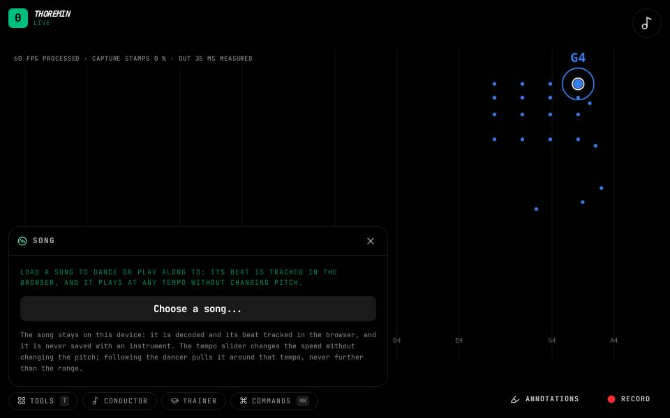

Song

What to do
- Open Tools, then Song, and load a song file, or search for one (try "bach") and choose a track.
- Press Play.
- Tick Follow the dancer to make the song follow your pulse.
Dance or play along to a song. Its beat is tracked in your browser and it plays at any tempo without changing pitch.
Find a song
Type in the search box to look through the Internet Archive and Audius, two catalogues of freely streamable music, and Deezer; or paste a link to a track on any of them, or to any audio file on the web. An album lists its tracks; choose one. A song from the Internet Archive, Audius or the web loads like a file of your own: its beat is tracked and it follows the dancer. Each song shows where it came from, the licence its page states and a link to that page. Some web addresses cannot be opened: their site does not let other pages read its audio, and the Song tool says so.
Songs in their own players
A link to YouTube, SoundCloud, Deezer, Suno or Bandcamp (for Bandcamp, paste the code from its Share, then Embed) plays in that site's own player, in a small window at the bottom left that stays while the song is loaded; its Close button ends it. Play, pause, the tempo and the position work as far as that player allows: YouTube changes tempo in steps, SoundCloud has no tempo control, and Deezer, Suno and Bandcamp play only from their own buttons. These songs are never analysed: no beat is tracked, and while one plays nothing listens to the microphone (the listening games, the chord map following the microphone, recording the microphone), each of which says so. To search YouTube too, add your own YouTube key under YouTube search key in the Song tool; it stays in this browser.
Follow the dancer
With Follow the dancer on, the song's tempo follows your pulse (your stride or bounce) within a range you set, ignoring whether you bounce on every beat or every other. Start on your step lands a beat of the song on your step when you press Play. Pausing the song keeps the lock.
Conduct a recording
In the Conductor you can make the song itself follow your conducting: choose which beat of the song your first beat lands on (in the Conductor tool), and on a hold the song can fade instead of cutting (Fade on a conductor's hold, in the Song tool).